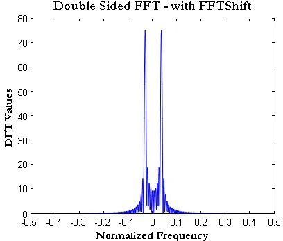
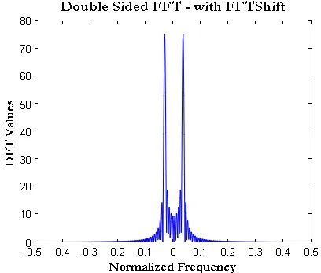

Further discussions: Signal processing
Here is the overview of the topics that I covered:
- FFT, Hilbert transform and its concrete applications;
- Laplace Transform and Z-transform
- Some modulations techniques such as QAM16, OFDM and QPSK;
- Signal encoding and encryption;
- Some communication protocols on the physical layer such as 4G.
Hilbert transform
Discrete Fourier Transform (DFT)
Questions and clarifications
Why is this used for ?
This transform allows us to better identify the contribution of frequencies in a signal, which most of time are not noticeable when looking at the signal in its time representation. However, to be able to manupilate the spectrum density with a computer, the signal (represented in both domains) has to be finite and discrete (i.e., limited number of points/samples \(N\)). The DFT essentially performs both signal sampling and spectrum quantization. In fact, the DFT is simply a discrete version of the Fourier transform. As a result, integrals are replaced by sums. \[ X[k] = \sum_{n=0}^{N-1} x[n] e^{-i2\pi kn/N} \] \(k\) is the frequency index of the discrete spectrum and determines how fast (frequency) we travel around the complex unit circle (1 round = 1 cycle of the signal's time length), and \(n\) is the time index of the signal sampled at each \(T_e\).
This can also be viewed as a dot product between the signal and the complex exponential domain. The result evaluates the correlation between those.
However, \(k\) and \(n\) are not directly the physical frequency and time of the signal, which can be retrieved using the following formulas: \[ f = \frac{k}{N T_e} \] \[ t = \frac{n}{T_e} \] where \(f\) is the physical frequency, \(t\) is the physical time and \(NT_e\) is the length of the signal.
As a result, we increment the \(k\) index to know the contribution of each frequency in the signal. With the illustration below, that may come clearer. It illustrates how the length of the signal \(NT_e\) is related to the index \(k\).

\(k=0 \rightarrow \) 0 cycle around the circle | \(k=1 \rightarrow \) 1 cycle around the circle | \(k=2 \rightarrow \) 2 cycle around the circle
Why are there negative frequencies at all ?
Negative frequencies account for information redundancy. This redundancy comes from the fact that in the complex domain there are symmetries. Indeed, \(e^{i\theta}\) is a periodic function: \( e^{i\theta} = e^{i(2\pi+\theta)} \). This is due to the Euler's formula: \(e^{i\theta} = cos(\theta) + isin(\theta)\). This results in the following property: \( arg(e^{i\omega}) = -arg(e^{i(2\pi-\omega)}) = -arg(e^{-i\omega}) \).
Therefore, performing an anti-clockwise (positive frequencies first) or clockwise (negative frequencies first) rotation is equivalent. This has no impact on the magnitude of each frequency, but only their phase. So all angles (i.e., each frequency's contribution) taken after \(\pi\) (i.e., \(k > \frac{N}{2}\)) are redundant (with a change in the sign) because we basically measure the same frequencies before and after \(\pi\).The direction of the rotation is the only difference.
Note that instead of taking negative frequencies \(-i\omega\), we could take \(i(\omega + \pi) \). The result would be a double-sided graph with all frequencies positive. In Matlab, we can use fftshift to get the graph at the right side.
 

Why do we sometimes only consider the absolute value of the FFT ?
The absolute value informs us about the contribution (weight) of the specific frequency \(f=\frac{k}{NTe}\) to the signal regardless of the phase correlation. Therefore, as far as the magnitude is concerned, it does not matter in which direction we travel the circle around.
What does the phase of the FFT actually tell us ?
The phase of the FFT is: \( \phi = arctan(\frac{S_k sin(2\pi\frac{k}{N}n)}{C_k cos(2\pi\frac{k}{N}n)}) \), where \(S_k\) and \(C_k\) are the coefficients computed with the DFT for \(k\) constant.
- If the phase becomes positive (> 0°), it means that the signal is more correlated with the imaginary part of the complex exponential.
- If the phase becomes negative (< 0°), it means that the signal is less correlated with the complex exponential domain.
If the phase is around 0° and there is a peak in the magnitude spectrum, this might mean that the signal is just shifted by \(\frac{\pi}{4}\), it means that the signal is more correlated with the imaginary part of the complex exponential.
To what extent does the Nyquist frequency theorem explain the redundancy of information with the FFT (negative frequencies) ?
The value \(k\) accounts for how many cycles (periods) of the length of the signal we travel. Actually, the maximum frequency that should be considered is \( f=\frac{k}{NT_e} \leq \frac{f_e}{2} \implies k_{max}=\frac{N}{2} \). Beyond this value, the frequency spectrum gets folded back on itself and information is duplicated. This is where negative frequencies show up.
Example
Let's take an example to better understand this. Let's consider we sample a signal over 1 second with 10 points (i.e., \(N=10\)). This implies that \(f_e=10\)Hz so \(f_{max}=5\)Hz. Therefore, the frequency resolution is \(\delta \omega=\frac{2\pi}{NT_e} \implies \delta f=\frac{1}{NT_e} = 1\)Hz.
Now we want to know how much the \(k=1\) frequency contributes to the signal. The frequency tested here is \(f_{k=1}=\frac{1}{NT_e}=1\)Hz which results in traveling the unit circle with this angle pace \(\phi[n]=2\pi\frac{n}{10}\), \(0 \leq n \leq N-1=9\).
Also let's consider the case where \(k=9\). The frequency tested here is \(f_{k=9}=\frac{9}{NT_e}=9\)Hz, we have got: \(\phi[n]=2\pi\frac{9n}{10}=-2\pi\frac{n}{10}\), \(0 \leq n \leq N-1=9\).
As we can see, though we increase the frequency, the speed at which we travel the circle does not increase, only the sign of the direction changes (negative sign). This effect shows clearly the effect of the Nyquist-Shannon criterion, beyond \(k=\frac{N}{2}\) (so \(k=5\) in that case), the frequency gets folded back on itself causing negative frequency values to appear. As a result, these frequencies do not bring any new information to the signal. We conclude that the \(\pi\) periodicity of the complex exponential domain is the reason why we have negative frequencies. In fact, the negative frequencies are the conjugate of the positive frequencies.
The FFT algorithm
The DFT formula can be re-written as a matrix operation (vector rotation) between the sampled signal and the complex exponential domain. \[ X[k] = \begin{bmatrix} X_0 & X_1 & X_2 & \cdots & X_{N-1} \end{bmatrix} = \begin{bmatrix} x_0 & x_1 & x_2 & \cdots & x_{N-1} \end{bmatrix} \times \begin{bmatrix} 1 & 1 & 1 & \cdots & 1 \\ 1 & e^{-i2\pi k/N} & e^{-i2\pi 2k/N} & \cdots & e^{-i2\pi (N-1)k/N} \\ 1 & e^{-i2\pi 2k/N} & e^{-i2\pi 4k/N} & \cdots & e^{-i2\pi 2(N-1)k/N} \\ \vdots & \vdots & \vdots & \ddots & \vdots \\ 1 & e^{-i2\pi (N-1)k/N} & e^{-i2\pi 2(N-1)k/N} & \cdots & e^{-i2\pi (N-1)^2k/N} \\ \end{bmatrix} \] As mentioned earlier, we obtain a complex vector \(X[k]\) (each point is a complex exponential number) of length \(N\), which is the same length as the signal \(x[n]\). The matrix has symmetries (due to the periodicity of the complex exponentials) that can be leveraged to reduce the number of complex multiplications, which is the goal of the FFT algorithm.
As considered earlier on this page, traveling the circle with \(2\pi\frac{k+\frac{N}{2}}{N}n = 2\pi\frac{k}{N}n +\pi n \mod 2\pi = -2\pi\frac{k}{N}n \mod 2\pi \). As a result we conclude that for \(k > \frac{N}{2}\) indices the exponential number is the conjugate of the exponential number at \(k\). The example below illustrates this periodicity for \(n=1\), we take all possible values of \(k < N-1\). \[ \left\{ \begin{matrix} X[0] = x[0]e^{-i2\pi 0n/N} \\ X[1] = x[0]e^{-i2\pi n/N} \\ \vdots \\ X[N-2] = x[0]e^{-i2\pi n\frac{N-2}{N}} = x[0]e^{i2\pi \frac{2n}{N}} = Re(X[2])-Im(X[2]) \\ X[N-1] = x[0]e^{-i2\pi n\frac{N-1}{N}} = x[0]e^{i2\pi \frac{n}{N}} = Re(X[1])-Im(X[1]) \\ \end{matrix} \right. \] We clearly notice that we cut by half the number of complex computations. It is also important to notice that this periodicity applies to the time axis \(n\) as well. \[ X[k] = x[0]e^{-i2\pi 0k/N} + x[1]e^{-i2\pi k/N} + \cdots + x[N-2]e^{i2\pi \frac{2k}{N}} + x[N-1]e^{i2\pi \frac{k}{N}} \] \[ \implies X[k] = x[0]e^{-i2\pi 0k/N} + x[1]e^{-i2\pi k/N} + \cdots + \frac{Re(X[k]_{x[2]})-Im(X[k]_{x[2]})}{x[2]} + \frac{Re(X[k]_{x[1]})-Im(X[k]_{x[1]})}{x[1]} \] where \(X[k]_{x[n]} = x[n]e^{-i2\pi kn/N}\) is the complex exponential number at \(k\) for \(x[n]\). This value is assumed to be already computed.
From the DFT to the HT
Laplace transform: beyond the Fourier transform
In this section, I would like to expand on the Laplace transform; its mathematical meaning as well as its usual applications.
As indicated in this section's title, the Laplace transform is an generalization of the Fourier transform. It means that it can describe and analyse a wider range of signals. Indeed, the Fourier transform is limited to describing a signal only by using its frequency components (the operation involves a scalar product between the signal and the complex unit circle (cf here)). It helps us in vizualizing clearly the presence and contribution of each frequency in the signal. With the Laplace transform, a new parameter \(\alpha\) is added, which accounts for a scaling factor in the complex exponential domain. Thus, besides providing us information about the frequency components of the signal, it also gives us information about the amplitude dynamics of the signal. In summary, it identifies the presence of decreasing or increasing oscillations in the signal.
The Z-transform
The Z-transform is simply the Laplace transform applied to discrete signals: \[ X(p) = \int_{0}^{\infty} x(nT_e) e^{-pt}dt = \int_{0}^{\infty} \sum_{n=0}^{\infty} x(nT_e) \delta(t-nT_e) e^{-pt}dt = \sum_{n=0}^{\infty} x(nT_e) e^{-pnT_e} \equiv X(z) = \sum_{n=0}^{\infty} x[n] z^{-n} \] where \(z\) is a complex number and can be re-written like this: \(z=e^{pT_e}=e^{(\alpha+i\omega)T_e}=e^{\alpha T_e} e^{i\omega T_e}\).
What we obtain is a 2D complex vector \(X(z)\), where each \(z\) represents a specific scaling factor \(\alpha\) associated with a frequency component \(\omega\).
Note that with \(\alpha=0\), we get back to the Fourier transform \(z=e^{i\omega T_e}=e^{i 2\pi \nu T_e}\), which makes sense because this means no scaling factor in the signal and only constant oscillations (what the FT measures).
Applications
This transform is particularly relevant when it comes to determining the stability of a system. A system whose impulse response outputs a signal with increasing oscillations \(\alpha > 0\) is unstable. This can also be pictured in the complex exponential plane, where the poles of the system are located. If the poles are located in the right half-plane \(\alpha > 0\), the system is unstable.
The formula shown above clearly demonstrates that the sampling period \(T_e\) has an impact on the scaling of the system's reponse. Indeed, the smaller the sampling period, the slower the amplitude dynamics \(e^{(\alpha T_e)}\).
It has also useful features that make it easy to resolve linear differential equations.
Wavelets transform
The Fourier transform is also quite limited because it assumes that a signal is stationary. This means that it should have the same frequency over time.
Short-Time Fourier transform
This transform was thought up to measure
The Wavelets transform was created to identify